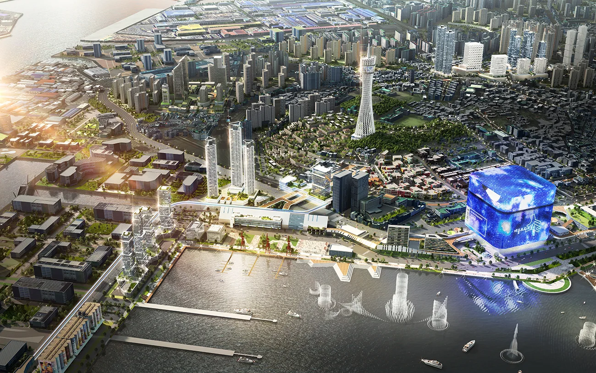

WORK / PROJECT ARCHIVE
Our work.공간을 그리는 다양한 시선.
건축과 도시, 일상의 공간을 시각화한 메이크 그룹의 프로젝트입니다.
제작 분야로 살펴보세요. 여러 분야를 함께 제작한 프로젝트는 해당 분야에 함께 표시됩니다.
전체 37개 프로젝트


검색 결과가 없습니다. 다른 검색어나 분야를 선택해 주세요.
LET’S CREATE THE NEXT SCENE
계획 중인 공간이 있나요?
프로젝트의 목적과 일정을 알려주세요.
필요한 이미지와 제작 방향을 함께 이야기합니다.